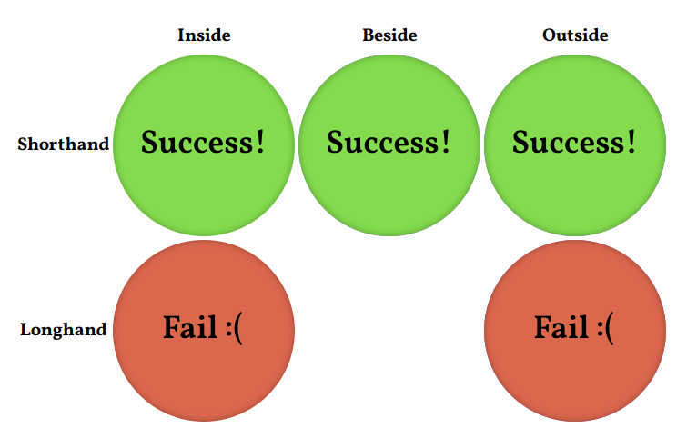

Path resolving test in values with custom property
| Inside | Beside | Outside | |
|---|---|---|---|
| Shorthand | |||
| Longhand |
Test description
This test was designed to test a fix for a specific bug in WebKit. And also to clarify the correspondence of how other browser engines resolve paths in url() in all possible scenarios, as described in the specification.
There is a note on this in the specification:
For example, relative URLs in CSS are resolved against the base URL of the stylesheet the value appears in. However, if a custom property like--my-image: url(foo.jpg);shows up in an"/a/style.css"stylesheet, it will not resolve into an absolute URL immediately; if that variable is later used in a different"/b/style.css"stylesheet likebackground: var(--my-image);, it will resolve at that point to"/b/foo.jpg".
This test most closely matches the structure described in the note:
> $ tree
.
├── a
│ ├── foo.svg
│ └── style.css
├── b
│ ├── foo.svg
│ └── style.css
├── foo.svg
└── index.html
The custom property --my-image: url("./foo.svg"); is declared in /a/style.css. And it is used in /b/style.css.
According to a note in the specification, the final path to the image should be /b/foo.svg, so there is a picture with the inscription “Success!”
{kind=link}
If the path becomes /a/foo.svg, means that it was resolved relative to the file in which the custom property was set, which is incorrect and the picture will show the inscription “Wrong folder”.
{kind=link}
And if the path is built from the markup file (or for some other reason) and resolves to /foo.svg, then we will see the inscription “Fail :(”.
{kind=link}
But that’s not all! It turns out that incorrect behavior is possible not only if url() is located inside a custom property background: var(--my-image);, but also beside it in the shorthand background: url("./foo.svg") var(--my-color); (for which the WebKit had a separate bug, but it has already been fixed), and even outside the current part of the multiple value background: url("./foo.svg"), linear-gradient(var(--my-color), var(--my-color));. Moreover, in these cases, the custom property has nothing to do with the path to the image, it can contain just a color value.
And finally, different behavior can also be manifested in the case of using shorthand background and longhand background-image.
All of these options are processed by this test. If I am missing something, please let me know or send a pull request.
Results
| Firefox | Chrome | Safari ≤ 14.0 | Safari ≥ 14.1 | Epiphany | |
|---|---|---|---|---|---|
| Linux | Complete success | Complete success | n/a | n/a | Partial failure |
| Windows | Complete success | Complete success | n/a | n/a | n/a |
| macOS | Complete success | Complete success | Complete failure | Partial failure | n/a |
| iOS | Depends on safari | Depends on safari | Complete failure | Partial failure | n/a |
| Android | Complete success | Complete success | n/a | n/a | n/a |
{kind=link}
{kind=link}
{kind=link}
{kind=link}
{kind=link}
{kind=link}
{kind=link}
{kind=link}
{kind=link}
{kind=link}
{kind=link}
{kind=link}
{kind=link}
In all cases, called Partial failure, the result is the following:
